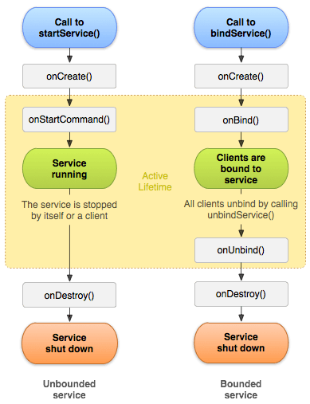

Android 插件化原理解析——Service的插件化
在 Activity生命周期管理 以及 广播的管理 中我们详细探讨了Android系统中的Activity、BroadcastReceiver组件的工作原理以及它们的插件化方案，相信读者已经对Android Framework和插件化技术有了一定的了解；本文将探讨Android四大组件之一——Service组件的插件化方式。
与Activity, BroadcastReceiver相比，Service组件的不同点在哪里呢？我们能否用与之相同的方式实现Service的插件化？如果不行，它们的差别在哪里，应该如何实现Service的插件化？
我们接下来将围绕这几个问题展开，最终给出Service组件的插件化方式；阅读本文之前，可以先clone一份 understand-plugin-framework，参考此项目的 service-management 模块。另外，插件框架原理解析系列文章见索引。
Service工作原理
连Service的工作原理都不了解，谈何插件化？知己知彼。
Service分为两种形式：以startService启动的服务和用bindService绑定的服务；由于这两个过程大体相似，这里以稍复杂的bindService为例分析Service组件的工作原理。
绑定Service的过程是通过Context类的bindService完成的，这个方法需要三个参数：第一个参数代表想要绑定的Service的Intent，第二个参数是一个ServiceConnetion，我们可以通过这个对象接收到Service绑定成功或者失败的回调；第三个参数则是绑定时候的一些FLAG；关于服务的基本概念，可以参阅 官方文档。（现在汉化了哦，E文不好童鞋的福音）
Context的具体实现在ContextImpl类，ContextImpl中的bindService方法直接调用了bindServiceCommon方法，此方法源码如下：
private boolean bindServiceCommon(Intent service, ServiceConnection conn, int flags,
UserHandle user) {
IServiceConnection sd;
if (conn == null) {
throw new IllegalArgumentException("connection is null");
}
if (mPackageInfo != null) {
// important
sd = mPackageInfo.getServiceDispatcher(conn, getOuterContext(),
mMainThread.getHandler(), flags);
} else {
throw new RuntimeException("Not supported in system context");
}
validateServiceIntent(service);
try {
IBinder token = getActivityToken();
if (token == null && (flags&BIND_AUTO_CREATE) == 0 && mPackageInfo != null
&& mPackageInfo.getApplicationInfo().targetSdkVersion
< android.os.Build.VERSION_CODES.ICE_CREAM_SANDWICH) {
flags |= BIND_WAIVE_PRIORITY;
}
service.prepareToLeaveProcess();
int res = ActivityManagerNative.getDefault().bindService(
mMainThread.getApplicationThread(), getActivityToken(), service,
service.resolveTypeIfNeeded(getContentResolver()),
sd, flags, getOpPackageName(), user.getIdentifier());
if (res < 0) {
throw new SecurityException(
"Not allowed to bind to service " + service);
}
return res != 0;
} catch (RemoteException e) {
throw new RuntimeException("Failure from system", e);
}
}
大致观察就能发现这个方法最终通过ActivityManagerNative借助AMS进而完成Service的绑定过程，在跟踪AMS的bindService源码之前，我们关注一下这个方法开始处创建的sd变量。这个变量的类型是IServiceConnection，如果读者还有印象，我们在 广播的管理 一文中也遇到过类似的处理方式——IIntentReceiver；所以，这个IServiceConnection与IApplicationThread以及IIntentReceiver相同，都是ActivityThread给AMS提供的用来与之进行通信的Binder对象；这个接口的实现类为LoadedApk.ServiceDispatcher。
这个方法最终调用了ActivityManagerNative的bindService，而这个方法的真正实现在AMS里面，源码如下：
public int bindService(IApplicationThread caller, IBinder token, Intent service,
String resolvedType, IServiceConnection connection, int flags, String callingPackage,
int userId) throws TransactionTooLargeException {
enforceNotIsolatedCaller("bindService");
// 略去参数校检
synchronized(this) {
return mServices.bindServiceLocked(caller, token, service,
resolvedType, connection, flags, callingPackage, userId);
}
}
bindService这个方法相当简单，只是做了一些参数校检之后直接调用了ActivityServices类的bindServiceLocked方法：
int bindServiceLocked(IApplicationThread caller, IBinder token, Intent service,
String resolvedType, IServiceConnection connection, int flags,
String callingPackage, int userId) throws TransactionTooLargeException {
final ProcessRecord callerApp = mAm.getRecordForAppLocked(caller);
// 参数校检，略
ServiceLookupResult res =
retrieveServiceLocked(service, resolvedType, callingPackage,
Binder.getCallingPid(), Binder.getCallingUid(), userId, true, callerFg);
// 结果校检， 略
ServiceRecord s = res.record;
final long origId = Binder.clearCallingIdentity();
try {
// ... 不关心， 略
mAm.startAssociationLocked(callerApp.uid, callerApp.processName,
s.appInfo.uid, s.name, s.processName);
AppBindRecord b = s.retrieveAppBindingLocked(service, callerApp);
ConnectionRecord c = new ConnectionRecord(b, activity,
connection, flags, clientLabel, clientIntent);
IBinder binder = connection.asBinder();
ArrayList<ConnectionRecord> clist = s.connections.get(binder);
// 对connection进行处理， 方便存取，略
clist.add(c);
if ((flags&Context.BIND_AUTO_CREATE) != 0) {
s.lastActivity = SystemClock.uptimeMillis();
if (bringUpServiceLocked(s, service.getFlags(), callerFg, false) != null) {
return 0;
}
}
// 与BIND_AUTO_CREATE不同的启动FLAG，原理与后续相同，略
} finally {
Binder.restoreCallingIdentity(origId);
}
return 1;
}
这个方法比较长，我这里省去了很多无关代码，只列出关键逻辑；首先它通过retrieveServiceLocked方法获取到了intent匹配到的需要bind到的Service组件res；然后把ActivityThread传递过来的IServiceConnection使用ConnectionRecord进行了包装，方便接下来使用；最后如果启动的FLAG为BIND_AUTO_CREATE，那么调用bringUpServiceLocked开始创建Service，我们跟踪这个方法：（非这种FLAG的代码已经省略，可以自行跟踪）
private final String bringUpServiceLocked(ServiceRecord r, int intentFlags, boolean execInFg,
boolean whileRestarting) throws TransactionTooLargeException {
// 略。。
final boolean isolated = (r.serviceInfo.flags&ServiceInfo.FLAG_ISOLATED_PROCESS) != 0;
final String procName = r.processName;
ProcessRecord app;
if (!isolated) {
app = mAm.getProcessRecordLocked(procName, r.appInfo.uid, false);
if (app != null && app.thread != null) {
try {
app.addPackage(r.appInfo.packageName, r.appInfo.versionCode, mAm.mProcessStats);
// 1. important !!!
realStartServiceLocked(r, app, execInFg);
return null;
} catch (TransactionTooLargeException e) {
throw e;
} catch (RemoteException e) {
Slog.w(TAG, "Exception when starting service " + r.shortName, e);
}
}
} else {
app = r.isolatedProc;
}
// Not running -- get it started, and enqueue this service record
// to be executed when the app comes up.
if (app == null) {
// 2. important !!!
if ((app=mAm.startProcessLocked(procName, r.appInfo, true, intentFlags,
"service", r.name, false, isolated, false)) == null) {
bringDownServiceLocked(r);
return msg;
}
if (isolated) {
r.isolatedProc = app;
}
}
// 略。。
return null;
}
这个方案同样也很长，但是实际上非常简单：注意我注释的两个important的地方，如果Service所在的进程已经启动，那么直接调用realStartServiceLocked方法来真正启动Service组件；如果Service所在的进程还没有启动，那么先在AMS中记下这个要启动的Service组件，然后通过startProcessLocked启动新的进程。
我们先看Service进程已经启动的情况，也即realStartServiceLocked分支：
private final void realStartServiceLocked(ServiceRecord r,
ProcessRecord app, boolean execInFg) throws RemoteException {
// 略。。
boolean created = false;
try {
synchronized (r.stats.getBatteryStats()) {
r.stats.startLaunchedLocked();
}
mAm.ensurePackageDexOpt(r.serviceInfo.packageName);
app.forceProcessStateUpTo(ActivityManager.PROCESS_STATE_SERVICE);
app.thread.scheduleCreateService(r, r.serviceInfo,
mAm.compatibilityInfoForPackageLocked(r.serviceInfo.applicationInfo),
app.repProcState);
r.postNotification();
created = true;
} catch (DeadObjectException e) {
mAm.appDiedLocked(app);
throw e;
} finally {
// 略。。
}
requestServiceBindingsLocked(r, execInFg);
// 不关心，略。。
}
这个方法首先调用了app.thread的scheduleCreateService方法，我们知道，这是一个IApplicationThread对象，它是App所在进程提供给AMS的用来与App进程进行通信的Binder对象，这个Binder的Server端在ActivityThread的ApplicationThread类，因此，我们跟踪ActivityThread类，这个方法的实现如下：
public final void scheduleCreateService(IBinder token,
ServiceInfo info, CompatibilityInfo compatInfo, int processState) {
updateProcessState(processState, false);
CreateServiceData s = new CreateServiceData();
s.token = token;
s.info = info;
s.compatInfo = compatInfo;
sendMessage(H.CREATE_SERVICE, s);
}
它不过是转发了一个消息给ActivityThread的H这个Handler，H类收到这个消息之后，直接调用了ActivityThread类的handleCreateService方法，如下：
private void handleCreateService(CreateServiceData data) {
unscheduleGcIdler();
LoadedApk packageInfo = getPackageInfoNoCheck(
data.info.applicationInfo, data.compatInfo);
Service service = null;
try {
java.lang.ClassLoader cl = packageInfo.getClassLoader();
service = (Service) cl.loadClass(data.info.name).newInstance();
} catch (Exception e) {
}
try {
ContextImpl context = ContextImpl.createAppContext(this, packageInfo);
context.setOuterContext(service);
Application app = packageInfo.makeApplication(false, mInstrumentation);
service.attach(context, this, data.info.name, data.token, app,
ActivityManagerNative.getDefault());
service.onCreate();
mServices.put(data.token, service);
try {
ActivityManagerNative.getDefault().serviceDoneExecuting(
data.token, SERVICE_DONE_EXECUTING_ANON, 0, 0);
} catch (RemoteException e) {
// nothing to do.
}
} catch (Exception e) {
}
}
看到这段代码，是不是似曾相识？！没错，这里与Activity组件的创建过程如出一辙！所以这里就不赘述了，可以参阅 Activity生命周期管理。
需要注意的是，这里Service类的创建过程与Activity是略微有点不同的，虽然都是通过ClassLoader通过反射创建，但是Activity却把创建过程委托给了Instrumentation类，而Service则是直接进行。
OK，现在ActivityThread里面的handleCreateService方法成功创建出了Service对象，并且调用了它的onCreate方法；到这里我们的Service已经启动成功。scheduleCreateService这个Binder调用过程结束，代码又回到了AMS进程的realStartServiceLocked方法。这里我们不得不感叹Binder机制的精妙，如此简洁方便高效的跨进程调用，在进程之间来回穿梭，游刃有余。
realStartServiceLocked方法的代码如下：
private final void realStartServiceLocked(ServiceRecord r,
ProcessRecord app, boolean execInFg) throws RemoteException {
// 略。。
boolean created = false;
try {
synchronized (r.stats.getBatteryStats()) {
r.stats.startLaunchedLocked();
}
mAm.ensurePackageDexOpt(r.serviceInfo.packageName);
app.forceProcessStateUpTo(ActivityManager.PROCESS_STATE_SERVICE);
app.thread.scheduleCreateService(r, r.serviceInfo,
mAm.compatibilityInfoForPackageLocked(r.serviceInfo.applicationInfo),
app.repProcState);
r.postNotification();
created = true;
} catch (DeadObjectException e) {
mAm.appDiedLocked(app);
throw e;
} finally {
// 略。。
}
requestServiceBindingsLocked(r, execInFg);
// 不关心，略。。
}
这个方法在完成scheduleCreateService这个binder调用之后，执行了一个requestServiceBindingsLocked方法；看方法名好像于「绑定服务」有关，它简单地执行了一个遍历然后调用了另外一个方法：
private final boolean requestServiceBindingLocked(ServiceRecord r, IntentBindRecord i,
boolean execInFg, boolean rebind) throws TransactionTooLargeException {
if (r.app == null || r.app.thread == null) {
return false;
}
if ((!i.requested || rebind) && i.apps.size() > 0) {
try {
bumpServiceExecutingLocked(r, execInFg, "bind");
r.app.forceProcessStateUpTo(ActivityManager.PROCESS_STATE_SERVICE);
r.app.thread.scheduleBindService(r, i.intent.getIntent(), rebind,
r.app.repProcState);
// 不关心，略。。
}
return true;
}
可以看到，这里又通过IApplicationThread这个Binder进行了一次IPC调用，我们跟踪ActivityThread类里面的ApplicationThread的scheduleBindService方法，发现这个方法不过通过Handler转发了一次消息，真正的处理代码在handleBindService里面：
private void handleBindService(BindServiceData data) {
Service s = mServices.get(data.token);
if (s != null) {
try {
data.intent.setExtrasClassLoader(s.getClassLoader());
data.intent.prepareToEnterProcess();
try {
if (!data.rebind) {
IBinder binder = s.onBind(data.intent);
ActivityManagerNative.getDefault().publishService(
data.token, data.intent, binder);
} else {
s.onRebind(data.intent);
ActivityManagerNative.getDefault().serviceDoneExecuting(
data.token, SERVICE_DONE_EXECUTING_ANON, 0, 0);
}
ensureJitEnabled();
} catch (RemoteException ex) {
}
} catch (Exception e) {
}
}
}
我们要Bind的Service终于在这里完成了绑定！绑定之后又通过ActivityManagerNative这个Binder进行一次IPC调用，我们查看AMS的publishService方法，这个方法简单第调用了publishServiceLocked方法，源码如下：
void publishServiceLocked(ServiceRecord r, Intent intent, IBinder service) {
final long origId = Binder.clearCallingIdentity();
try {
if (r != null) {
Intent.FilterComparison filter
= new Intent.FilterComparison(intent);
IntentBindRecord b = r.bindings.get(filter);
if (b != null && !b.received) {
b.binder = service;
b.requested = true;
b.received = true;
for (int conni=r.connections.size()-1; conni>=0; conni--) {
ArrayList<ConnectionRecord> clist = r.connections.valueAt(conni);
for (int i=0; i<clist.size(); i++) {
ConnectionRecord c = clist.get(i);
if (!filter.equals(c.binding.intent.intent)) {
continue;
}
try {
c.conn.connected(r.name, service);
} catch (Exception e) {
}
}
}
}
serviceDoneExecutingLocked(r, mDestroyingServices.contains(r), false);
}
} finally {
Binder.restoreCallingIdentity(origId);
}
}
还记得我们之前提到的那个IServiceConnection吗？在bindServiceLocked方法里面，我们把这个IServiceConnection放到了一个ConnectionRecord的List中存放在ServiceRecord里面，这里所做的就是取出已经被Bind的这个Service对应的IServiceConnection对象，然后调用它的connected方法；我们说过，这个IServiceConnection也是一个Binder对象，它的Server端在LoadedApk.ServiceDispatcher里面。代码到这里已经很明确了，由于分析过程过长，再继续估计大家要瞌睡了；接下来的过程非常简单，感兴趣的读者自行查阅LoadedApk.ServiceDispatcher的connected方法，一路跟踪弄清楚ServiceConnection回调过程，完成最后的拼图！
最后提一点，以上我们分析了Service所在进程已经存在的情况，如果Service所在进程不存在，那么会调用startProcessLocked方法创建一个新的进程，并把需要启动的Service放在一个队列里面；创建进程的过程通过Zygote fork出来，进程创建成功之后会调用ActivityThread的main方法，在这个main方法里面间接调用到了AMS的attachApplication方法，在AMS的attachApplication里面会检查刚刚那个待启动Service队列里面的内容，并执行Service的启动操作；之后的启动过程与进程已经存在的情况下相同；可以自行分析。
Service的插件化思路
现在我们已经明白了Service组件的工作原理，可对如何实现Service的插件化依然是一头雾水。
从上文的源码分析来看，Service组件与Activity有着非常多的相似之处：它们都是通过Context类完成启动，接着通过ActivityMnagaerNative进入AMS，最后又通过IApplicationThread这个Binder IPC到App进程的Binder线程池，然后通过H转发消息到App进程的主线程，最终完成组件生命周期的回调；对于Service组件，看起来好像可以沿用Activity组件的插件化方式：Hook掉ActivityManagerNative以及H类，但事实真的如此吗？
Service与Activity的异同
Service组件和Activity组件有什么不同？这些不同使得我们对于插件化方案的选择又有什么影响？
用户交互对于生命周期的影响
首先，Activity与Service组件最大的不同点在于，Activity组件可以与用户进行交互；这一点意味着用户的行为会对Activity组件产生影响，对我们来说最重要的影响就是Activity组件的生命周期；用户点击按钮从界面A跳转到界面B，会引起A和B这两个Activity一系列生命周期的变化。而Service组件则代表后台任务，除了内存不足系统回收之外，它的生命周期完全由我们的代码控制，与用户的交互无关。
这意味着什么？
Activity组件的生命周期受用户交互影响，而这种变化只有Android系统才能感知，因此我们必须把插件的Activity交给系统管理，才能拥有完整的生命周期；但Service组件的生命周期不受外界因素影响，那么自然而然，我们可以手动控制它的生命周期，就像我们对于BroadcastReceiver的插件化方式一样！Activity组件的插件化无疑是比较复杂的，为了把插件Activity交给系统管理进而拥有完整生命周期，我们设计了一个天衣无缝的方案骗过了AMS；既然Service的生命周期可以由我们自己控制，那么我们可以有更简单的方案实现它的插件化。
Activity的任务栈
上文指出了Activity和Service组件在处理用户交互方面的不同，这使得我们对于Service组建的插件化可以选择一种较为简单的方式；也许你会问，那采用Activity插件化的那一套技术能够实现Service组件的插件化吗？
很遗憾，答案是不行的。虽然Activity的插件化技术更复杂，但是这种方案并不能完成Service组件的插件化——复杂的方案并不意味了它能处理更多的问题。
原因在于Activity拥有任务栈的概念。或许你觉得任务栈并不是什么了不起的东西，但是，这确实是Service组件与Activity组件插件化方式分道扬镳的根本原因。
任务栈的概念使得Activtiy的创建就代表着入栈，销毁则代表出栈；又由于Activity代表着与用户交互的界面，所以这个栈的深度不可能太深——Activity栈太深意味着用户需要狂点back键才能回到初始界面，这种体验显然有问题；因此，插件框架要处理的Activity数量其实是有限的，所以我们在AndroidManifest.xml中声明有限个StubActivity就能满足插件启动近乎无限个插件Activity的需求。
但是Service组件不一样，理论情况下，可以启动的Service组件是无限的——除了硬件以及内存资源，没有什么限制它的数目；如果采用Activity的插件化方式，就算我们在AndroidMafenist.xml中声明再多的StubService，总有不能满足插件中要启动的Service数目的情况出现。也许有童鞋会说，可以用一个StubService对应多个插件Service，这确实能解决部分问题；但是，下面的这个区别让这种设想彻底泡汤。
Service无法拥有多实例
Service组件与Activity组件另外一个不同点在于，对同一个Service调用多次startService并不会启动多个Service实例，而非特定Flag的Activity是可以允许这种情况存在的，因此如果用StubService的方式，为了实现Service的这种特性，必须建立一个StubService到插件Service的一个Map，Map的这种一一对应关系使得我们使用一个StubService对应多个插件Service的计划成为天方夜谭。
至此，结论已经非常清晰——对于Service组件的插件化，我们不能简单地套用Activity的方案。
如何实现Service的插件化？
上文指出，我们不能套用Activity的方案实现Service组件的插件化，可以通过手动控制Service组件的生命周期实现；我们先来看一下Service的生命周期：

从图中可以看出，Service的生命周期相当简单：整个生命周期从调用 onCreate() 开始起，到 onDestroy() 返回时结束。对于非绑定服务，就是从startService调用到stopService或者stopSelf调用。对于绑定服务，就是bindService调用到unbindService调用；
如果要手动控制Service组件的生命周期，我们只需要模拟出这个过程即可；而实现这一点并不复杂：
- 如果以startService方式启动插件Service，直接回调要启动的Service对象的onStartCommand方法即可；如果用stopService或者stopSelf的方式停止Service，只需要回调对应的Service组件的onDestroy方法。
- 如果用bindService方式绑定插件Service，可以调用对应Service对应的onBind方法，获取onBind方法返回的Binder对象，然后通过ServiceConnection对象进行回调统计；unBindService的实现同理。
完全手动控制
现在我们已经有了实现思路，那么具体如何实现呢？
我们必须在startService,stopService等方法被调用的时候拿到控制权，才能手动去控制Service的生命周期；要达到这一目的非常简单——Hook ActivityManagerNative即可。在Activity的插件化方案中我们就通过这种方式接管了startActivity调用，相信读者并不陌生。
我们Hook掉ActivityManagerNative之后，可以拦截对于startService以及stopService等方法的调用；拦截之后，我们可以直接对插件Service进行操作：
- 拦截到startService之后，如果Service还没有创建就直接创建Service对象（可能需要加载插件），然后调用这个Service的onCreate,onStartCommond方法；如果Service已经创建，获取到原来创建的Service对象并执行其onStartCommand方法。
- 拦截到stopService之后，获取到对应的Service对象，直接调用这个Service的onDestroy方法。 这种方案简直简单得让人不敢相信！很可惜，这么干是不行的。
首先，Service存在的意义在于它作为一个后台任务，拥有相对较高运行时优先级；除非在内存及其不足威胁到前台Activity的时候，这个组件才会被系统杀死。上述这种实现完全把Service当作一个普通的Java对象使用了，因此并没有完全实现Service所具备的能力。
其次，Activity以及Service等组件是可以指定进程的，而让Service运行在某个特定进程的情况非常常见——所谓的远程Service；用上述这种办法压根儿没有办法让某个Service对象运行在一个别的进程。Android系统给开发者控制进程的机会太少了，要么在AndroidManifest.xml中通过process属性指定，要么借助Java的Runtime类或者native的fork；这几种方式都无法让我们以一种简单的方式配合上述方案达到目的。
代理分发技术
既然我们希望插件的Service具有一定的运行时优先级，那么一个货真价实的Service组件是必不可少的——只有这种被系统认可的真正的Service组件才具有所谓的运行时优先级。
因此，我们可以注册一个真正的Service组件ProxyService，让这个Service承载一个真正的Service组件所具备的能力（进程优先级等）；当启动插件的服务比如PluginService的时候，我们统一启动这个ProxyService，当这个ProxyService运行起来之后，再在它的onStartCommand等方法里面进行分发，执行PluginService的onStartCommond等对应的方法；我们把这种方案形象地称为「代理分发技术」
代理分发技术也可以完美解决插件Service可以运行在不同的进程的问题——我们可以在AndroidManifest.xml中注册多个ProxyService，指定它们的process属性，让它们运行在不同的进程；当启动的插件Service希望运行在一个新的进程时，我们可以选择某一个合适的ProxyService进行分发。也许有童鞋会说，那得注册多少个ProxyService才能满足需求啊？理论上确实存在这问题，但事实上，一个App使用超过10个进程的几乎没有；因此这种方案是可行的。
Service插件化的实现
现在我们已经设计出了Service组件的插件化方案，接下来我们以startService以及stopService为例实现这个过程。
注册代理Service
我们需要一个货真价实的Service组件来承载进程优先级等功能，因此需要在AndroidManifest.xml中声明一个或者多个（用以支持多进程）这样的Sevice：
<service
android:name="com.weishu.upf.service_management.app.ProxyService"
android:process="plugin01"/>
拦截startService等调用过程
要手动控制Service组件的生命周期，需要拦截startService,stopService等调用，并且把启动插件Service全部重定向为启动ProxyService（保留原始插件Service信息）；这个拦截过程需要Hook ActvityManagerNative，我们对这种技术应该是轻车熟路了；不了解的童鞋可以参考之前的文章 Hook机制之AMS&PMS 。
public static void hookActivityManagerNative() throws ClassNotFoundException,
NoSuchMethodException, InvocationTargetException,
IllegalAccessException, NoSuchFieldException {
Class<?> activityManagerNativeClass = Class.forName("android.app.ActivityManagerNative");
Field gDefaultField = activityManagerNativeClass.getDeclaredField("gDefault");
gDefaultField.setAccessible(true);
Object gDefault = gDefaultField.get(null);
// gDefault是一个 android.util.Singleton对象; 我们取出这个单例里面的字段
Class<?> singleton = Class.forName("android.util.Singleton");
Field mInstanceField = singleton.getDeclaredField("mInstance");
mInstanceField.setAccessible(true);
// ActivityManagerNative 的gDefault对象里面原始的 IActivityManager对象
Object rawIActivityManager = mInstanceField.get(gDefault);
// 创建一个这个对象的代理对象, 然后替换这个字段, 让我们的代理对象帮忙干活
Class<?> iActivityManagerInterface = Class.forName("android.app.IActivityManager");
Object proxy = Proxy.newProxyInstance(Thread.currentThread().getContextClassLoader(),
new Class<?>[] { iActivityManagerInterface }, new IActivityManagerHandler(rawIActivityManager));
mInstanceField.set(gDefault, proxy);
}
我们在收到startService,stopService之后可以进行具体的操作，对于startService来说，就是直接替换启动的插件Service为ProxyService等待后续处理，代码如下：
if ("startService".equals(method.getName())) {
// API 23:
// public ComponentName startService(IApplicationThread caller, Intent service,
// String resolvedType, int userId) throws RemoteException
// 找到参数里面的第一个Intent 对象
Pair<Integer, Intent> integerIntentPair = foundFirstIntentOfArgs(args);
Intent newIntent = new Intent();
// 代理Service的包名, 也就是我们自己的包名
String stubPackage = UPFApplication.getContext().getPackageName();
// 这里我们把启动的Service替换为ProxyService, 让ProxyService接收生命周期回调
ComponentName componentName = new ComponentName(stubPackage, ProxyService.class.getName());
newIntent.setComponent(componentName);
// 把我们原始要启动的TargetService先存起来
newIntent.putExtra(AMSHookHelper.EXTRA_TARGET_INTENT, integerIntentPair.second);
// 替换掉Intent, 达到欺骗AMS的目的
args[integerIntentPair.first] = newIntent;
Log.v(TAG, "hook method startService success");
return method.invoke(mBase, args);
}
对stopService的处理略有不同但是大同小异，读者可以上 github 查阅源码。
分发Service
Hook ActivityManagerNative之后，所有的插件Service的启动都被重定向了到了我们注册的ProxyService，这样可以保证我们的插件Service有一个真正的Service组件作为宿主；但是要执行特定插件Service的任务，我们必须把这个任务分发到真正要启动的Service上去；以onStart为例，在启动ProxyService之后，会收到ProxyService的onStart回调，我们可以在这个方法里面把具体的任务交给原始要启动的插件Service组件：
public void onStart(Intent intent, int startId) {
Log.d(TAG, "onStart() called with " + "intent = [" + intent + "], startId = [" + startId + "]");
// 分发Service
ServiceManager.getInstance().onStart(intent, startId);
super.onStart(intent, startId);
}
加载Service
我们可以在ProxyService里面把任务转发给真正要启动的插件Service组件，要完成这个过程肯定需要创建一个对应的插件Service对象，比如PluginService；但是通常情况下插件存在与单独的文件之中，正常的方式是无法创建这个PluginService对象的，宿主程序默认的ClassLoader无法加载插件中对应的这个类；所以，要创建这个对应的PluginService对象，必须先完成插件的加载过程，让这个插件中的所有类都可以被正常访问；这种技术我们在之前专门讨论过，并给出了「激进方案」和「保守方案」，不了解的童鞋可以参考文章 插件加载机制；这里我选择代码较少的「保守方案」为例（Droid Plugin中采用的激进方案）：
public static void patchClassLoader(ClassLoader cl, File apkFile, File optDexFile)
throws IllegalAccessException, NoSuchMethodException, IOException, InvocationTargetException, InstantiationException, NoSuchFieldException {
// 获取 BaseDexClassLoader : pathList
Field pathListField = DexClassLoader.class.getSuperclass().getDeclaredField("pathList");
pathListField.setAccessible(true);
Object pathListObj = pathListField.get(cl);
// 获取 PathList: Element[] dexElements
Field dexElementArray = pathListObj.getClass().getDeclaredField("dexElements");
dexElementArray.setAccessible(true);
Object[] dexElements = (Object[]) dexElementArray.get(pathListObj);
// Element 类型
Class<?> elementClass = dexElements.getClass().getComponentType();
// 创建一个数组, 用来替换原始的数组
Object[] newElements = (Object[]) Array.newInstance(elementClass, dexElements.length + 1);
// 构造插件Element(File file, boolean isDirectory, File zip, DexFile dexFile) 这个构造函数
Constructor<?> constructor = elementClass.getConstructor(File.class, boolean.class, File.class, DexFile.class);
Object o = constructor.newInstance(apkFile, false, apkFile, DexFile.loadDex(apkFile.getCanonicalPath(), optDexFile.getAbsolutePath(), 0));
Object[] toAddElementArray = new Object[] { o };
// 把原始的elements复制进去
System.arraycopy(dexElements, 0, newElements, 0, dexElements.length);
// 插件的那个element复制进去
System.arraycopy(toAddElementArray, 0, newElements, dexElements.length, toAddElementArray.length);
// 替换
dexElementArray.set(pathListObj, newElements);
}
匹配过程
上文中我们把启动插件Service重定向为启动ProxyService，现在ProxyService已经启动，因此必须把控制权交回原始的PluginService；在加载插件的时候，我们存储了插件中所有的Service组件的信息，因此，只需要根据Intent里面的Component信息就可以取出对应的PluginService。
private ServiceInfo selectPluginService(Intent pluginIntent) {
for (ComponentName componentName : mServiceInfoMap.keySet()) {
if (componentName.equals(pluginIntent.getComponent())) {
return mServiceInfoMap.get(componentName);
}
}
return null;
}
创建以及分发
插件被加载之后，我们就需要创建插件Service对应的Java对象了；由于这些类是在运行时动态加载进来的，肯定不能直接使用new关键字——我们需要使用反射机制。但是下面的代码创建出插件Service对象能满足要求吗？
ClassLoader cl = getClassLoader();
Service service = cl.loadClass("com.plugin.xxx.PluginService1");
Service作为Android系统的组件，最重要的特点是它具有Context；所以，直接通过反射创建出来的这个PluginService就是一个壳子——没有Context的Service能干什么？因此我们需要给将要创建的Service类创建出Conetxt；但是Context应该如何创建呢？我们平时压根儿没有这么干过，Context都是系统给我们创建好的。既然这样，我们可以参照一下系统是如何创建Service对象的；在上文的Service源码分析中，在ActivityThread类的handleCreateService完成了这个步骤，摘要如下：
try {
java.lang.ClassLoader cl = packageInfo.getClassLoader();
service = (Service) cl.loadClass(data.info.name).newInstance();
} catch (Exception e) {
}
try {
ContextImpl context = ContextImpl.createAppContext(this, packageInfo);
context.setOuterContext(service);
Application app = packageInfo.makeApplication(false, mInstrumentation);
service.attach(context, this, data.info.name, data.token, app,
ActivityManagerNative.getDefault());
service.onCreate();
可以看到，系统也是通过反射创建出了对应的Service对象，然后也创建了对应的Context，并给Service注入了活力。如果我们模拟系统创建Context这个过程，势必需要进行一系列反射调用，那么我们何不直接反射handleCreateService方法呢？
当然，handleCreateService这个方法并没有把创建出来的Service对象作为返回值返回，而是存放在ActivityThread的成员变量mService之中，这个是小case，我们反射取出来就行；所以，创建Service对象的代码如下：
/**
* 通过ActivityThread的handleCreateService方法创建出Service对象
* @param serviceInfo 插件的ServiceInfo
* @throws Exception
*/
private void proxyCreateService(ServiceInfo serviceInfo) throws Exception {
IBinder token = new Binder();
// 创建CreateServiceData对象, 用来传递给ActivityThread的handleCreateService 当作参数
Class<?> createServiceDataClass = Class.forName("android.app.ActivityThread$CreateServiceData");
Constructor<?> constructor = createServiceDataClass.getDeclaredConstructor();
constructor.setAccessible(true);
Object createServiceData = constructor.newInstance();
// 写入我们创建的createServiceData的token字段, ActivityThread的handleCreateService用这个作为key存储Service
Field tokenField = createServiceDataClass.getDeclaredField("token");
tokenField.setAccessible(true);
tokenField.set(createServiceData, token);
// 写入info对象
// 这个修改是为了loadClass的时候, LoadedApk会是主程序的ClassLoader, 我们选择Hook BaseDexClassLoader的方式加载插件
serviceInfo.applicationInfo.packageName = UPFApplication.getContext().getPackageName();
Field infoField = createServiceDataClass.getDeclaredField("info");
infoField.setAccessible(true);
infoField.set(createServiceData, serviceInfo);
// 写入compatInfo字段
// 获取默认的compatibility配置
Class<?> compatibilityClass = Class.forName("android.content.res.CompatibilityInfo");
Field defaultCompatibilityField = compatibilityClass.getDeclaredField("DEFAULT_COMPATIBILITY_INFO");
Object defaultCompatibility = defaultCompatibilityField.get(null);
Field compatInfoField = createServiceDataClass.getDeclaredField("compatInfo");
compatInfoField.setAccessible(true);
compatInfoField.set(createServiceData, defaultCompatibility);
Class<?> activityThreadClass = Class.forName("android.app.ActivityThread");
Method currentActivityThreadMethod = activityThreadClass.getDeclaredMethod("currentActivityThread");
Object currentActivityThread = currentActivityThreadMethod.invoke(null);
// private void handleCreateService(CreateServiceData data) {
Method handleCreateServiceMethod = activityThreadClass.getDeclaredMethod("handleCreateService", createServiceDataClass);
handleCreateServiceMethod.setAccessible(true);
handleCreateServiceMethod.invoke(currentActivityThread, createServiceData);
// handleCreateService创建出来的Service对象并没有返回, 而是存储在ActivityThread的mServices字段里面, 这里我们手动把它取出来
Field mServicesField = activityThreadClass.getDeclaredField("mServices");
mServicesField.setAccessible(true);
Map mServices = (Map) mServicesField.get(currentActivityThread);
Service service = (Service) mServices.get(token);
// 获取到之后, 移除这个service, 我们只是借花献佛
mServices.remove(token);
// 将此Service存储起来
mServiceMap.put(serviceInfo.name, service);
}
现在我们已经创建出了对应的PluginService，并且拥有至关重要的Context对象；接下来就可以把消息分发给原始的PluginService组件了，这个分发的过程很简单，直接执行消息对应的回调(onStart, onDestroy等）即可；因此，完整的startService分发过程如下：
public void onStart(Intent proxyIntent, int startId) {
Intent targetIntent = proxyIntent.getParcelableExtra(AMSHookHelper.EXTRA_TARGET_INTENT);
ServiceInfo serviceInfo = selectPluginService(targetIntent);
if (serviceInfo == null) {
Log.w(TAG, "can not found service : " + targetIntent.getComponent());
return;
}
try {
if (!mServiceMap.containsKey(serviceInfo.name)) {
// service还不存在, 先创建
proxyCreateService(serviceInfo);
}
Service service = mServiceMap.get(serviceInfo.name);
service.onStart(targetIntent, startId);
} catch (Exception e) {
e.printStackTrace();
}
}
至此，我们已经实现了Service组件的插件化；完整的代码见 github，代码以startService, stopService为例进行了说明，bindService以及unbindService的原理是一样的，感兴趣的读者可以自行实现；欢迎PR。
小节
本文中我们以绑定服务为例分析了Service组件的工作原理，并指出用户交导致组件生命周期的变化是Activity与Service的根本差别，这种差别使得插件方案对于它们必须采取不同的处理方式；最后我们通过手动控制Service组件的生命周期结合「代理分发技术」成功地实现了Service组件的插件化；这种插件化方案堪称「完美」，如果非要吹毛求疵，那只能说由于同一个进程的所有Service都挂载在同一个ProxyService上面，如果系统可用内存不够必须回收Service，杀死一个ProxyService会导致一大票的插件Service歇菜。
实际使用过程中，Service组件的更新频度并不高，因此直接把插件Service注册到主程序也是可以接受的；而且如果需要绑定远程Service，完全可以使用一个Service组件根据不同的Intent返回不同的IBinder，所以不实现Service组件的插件化也能满足工程需要。值得一提的是，我们对于Service组件的插件化方案实际上是一种「代理」的方式，用这种方式也能实现Activity组件的插件化，有一些开源的插件方案比如 DL 就是这么做的。
迄今为止，我们讲述了了Activity、BroadcastReceiver以及Service的插件化方式，不知读者思索过没有，实现插件化的关键点在哪里？
Service，Activity等不过就是一些普通的Java类，它们之所称为四大组件，是因为他们有生命周期；这也是简单地采用Java的动态加载技术无法实现插件化的原因——动态加载进来的Service等类如果没有它的生命周期，无异于一个没有灵魂的傀儡。对于Activity组件，由于他的生命周期受用户交互影响，只有系统本身才能对这种交互有全局掌控力，因此它的插件化方式是Hook AMS，但是生命周期依然交由系统管理；而Service以及BroadcastReceiver的生命周期没有额外的因素影响，因此我们选择了手动控制其生命周期的方式。不论是借尸还魂还是女娲造人，对这些组件的插件化终归结底是要赋予组件“生命”。
插件化系列的文章有整整一个月没有更新了，非常抱歉！这段时间发生了很多事情，我实在抽不出时间照顾博客；而写这种文章又需要足够的时间准备，要跟踪源码分析过程，要找联系DroidPlugin作者确认设计思路，还要亲自写demo验证。
喜欢就点个赞吧，兜里有一块钱的童鞋可以点击下面的打赏然后扫一下二维码哦～持续更新，请关注github项目 understand-plugin-framework 和我的 博客!